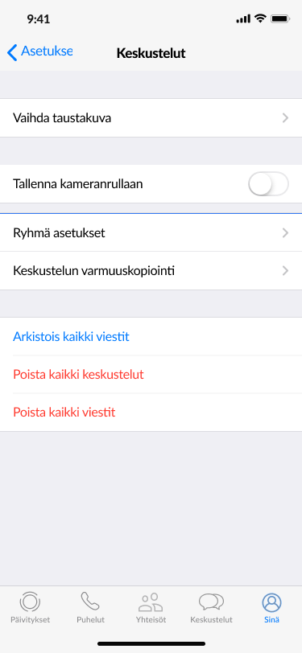
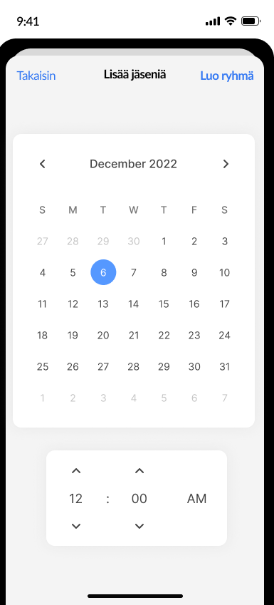
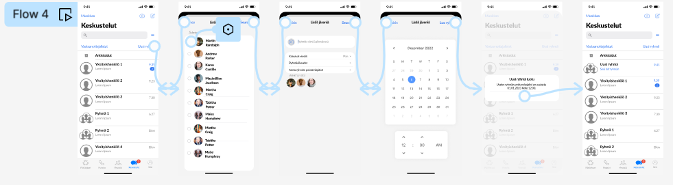

In this project, we focused on WhatsApp group chats, particularly on the management of old and inactive groups. Our goal was to gather user experiences and identify potential issues they encounter when it comes to preserving and managing groups within the application. Our aim was to identify how we could improve the manageability of groups and determine whether inactive groups are perceived as problematic.
Investigate the shortcomings related to preserving groups in the WhatsApp application.
Propose potential enhancements to the group management process.
Survey user opinions and experiences concerning inactive groups and their potential negative impact.
These objectives guided our research process, allowing us to refer back to them as the study progressed. Clarifying these objectives enables the improvement of the user experience in the WhatsApp application, particularly in preserving older groups.
A total of 68 individuals participated in the survey. The survey was designed flexibly, with its length and questions varying based on respondents' preferences and experiences. The survey provided comprehensive insights into how users perceive inactive groups and their management.
We conducted interviews with 7 users to delve into their experiences and perspectives. The interviews were carried out using a semi-structured interview framework, allowing for flexible discussions. Transcriptions of the interviews were compiled. Our focus was to gain a deeper understanding of users' needs and desires.
We utilized affinity analysis to organize and categorize the data collected within our team. This analysis helped us identify common themes and pain points, which guided the refinement of our research and solutions.
Based on the interviews, we constructed four distinct user personas. These personas aimed to provide insights into the diverse needs and expectations of different users, including both younger and older individuals, and their ways of communicating with family and friends.
We described user journeys and touchpoints using Service Blueprints, which aided our understanding
of how users interact with the WhatsApp application in various scenarios. These user journeys were
instrumental in enhancing the user experience, particularly in managing inactive groups.
Users find inactive groups less problematic than group management challenges. The study reveals that 52.9% did not consider inactive groups harmful, while 47.1% found them somewhat disturbing. Some users view inactive groups as a drawback but may not actively seek an easier removal solution.
Users find group management and navigation challenging. Research results suggest that they desire better group management. While most respondents actively use groups, they struggle with sorting and managing them, negatively impacting the user experience within the app.
Users distinguish between apps offering diverse group management options. The study reveals that many utilize different group messaging apps and may not wish to transfer these features to WhatsApp, indicating a preference for using various apps for distinct group needs.
These user issues are crucial starting points for enhancing the WhatsApp group management experience. Users seek more efficient group navigation and improved management solutions. The planned enhancements and features are designed to meet these user needs and desires.
The first step involved a thorough analysis of the app's interface, appearance, and functionalities
In our design process, we started by evaluating the current user interface and features of the WhatsApp app. Our aim was to develop solutions that not only met user needs but also seamlessly integrated with the existing app, ensuring natural and intuitive workflows.
During ideation, we used diverse brainstorming methods to create new ideas and explore
potential enhancements in group management and navigation. We outlined four different
alternatives, focusing on simplicity and clarity to ensure users could naturally and
effortlessly make use of them.

In the implementation phase, we transitioned from theory to practice by creating prototypes of our proposed solutions. We employed the Figma program for prototyping and design, developing a total of four  distinct prototypes, each with its unique workflow. These prototypes aimed to showcase how users could seamlessly navigate between different views and utilize new features.
We employed Figma to craft interactive prototypes, demonstrating the practical functionality of the new features. Each prototype prioritized a seamless and intuitive user experience to ensure easy adoption of our solutions. Figma also streamlined teamwork collaboration, a crucial element for project success.
The testing process involved four participants who independently completed tasks using Figma workflows. They were encouraged to think out loud and provide immediate feedback. The observer focused solely on recording their thoughts and actions.
* We also received a valuable new development suggestion we hadn't considered before.
Changing inactive groups to gray to make them easier to notice and remove.
This objective was successfully achieved through survey research and interviews, which revealed the issues users face in group management and group inactivity. This allowed us to clearly identify the deficiencies experienced by users.
This objective was achieved during the design phase, where we created four different prototypes with proposed solutions. These prototypes provided practical examples of how group management could be improved, with a particular focus on separating groups from private messages and setting expiration dates.
This goal was reached through a survey and concept scenario. User feedback indicated that inactive groups were seen as problematic in some cases, with a desire for improved management. The concept scenario allowed users to share opinions and suggest enhancements for group management.
The project provided concrete solution proposals that addressed the
needs and desires of users. Specifically, the suggestions related to
group management, such as separating groups from private messages and
the option to set an expiration date when creating a group, received
positive feedback and support.
Additionally, the data collected from the project indicated that users'
experiences with inactive groups are subjective, emphasizing the importance
of offering diverse management options to cater to different user preferences.
User-Centered Design: The project reinforced the importance of user-centered design. Understanding user needs and desires is crucial for successful product development projects.
Survey Research and Interviews: Creating surveys and conducting interviews proved to be effective tools for gathering user opinions and experiences. Combining these methods provided a comprehensive understanding of user needs.
Prototype Creation: Creating prototypes in Figma allowed for visualizing ideas and presenting them in practice. Prototypes worked well to show users how improvements could work.
Affinity Analysis and User Personas: These tools were used to organize data and identify common themes. User personas helped in understanding the diverse needs of different user groups.
User Journey Mapping: Using Service Blueprints helped understand how users interact with the application in different scenarios, aiding in designing improvements to the user experience.
Testing: Testing situations where observers monitored participants provided valuable feedback without unnecessary guidance. The test results helped distinguish effective solutions from those that didn't work.
+ Survey research and interviews helped collect high-quality data on user opinions and needs.
+ Creating prototypes in Figma proved to be an efficient way to demonstrate improvements in practice
+ Testing situations with an observer provided impartial feedback.
- The initial survey lacked in-depth questions for those who responded negatively.
- This information could have provided a deeper understanding of the reasons behind negative responses.
* Users' experiences with inactive groups were diverse and subjective. Surprisingly, some
users did not perceive them as harmful.
* Valuable suggestions were obtained during testing that had not been considered, such as changing inactive groups to gray.
Although this project was fictional, it provided valuable information and suggestions for improving WhatsApp group management. If the project were to continue, the following steps could be considered.
Practical Implementation: The development team could use the obtained prototypes and suggestions as a foundation for designing and implementing new features. Practical application could allow users to experience the improvements firsthand.
User Testing: User testing of the new features is crucial. User feedback can help identify potential issues and make necessary adjustments to ensure seamless enhancements.
Ongoing Updates: Based on user feedback and analysis, features should be continuously updated and improved. Optimizing the user experience is an ongoing process, and new suggestions and ideas may arise as implemented features evolve.
User Surveys and Monitoring: Continuous surveys and feedback loops are important. They help keep a pulse on user satisfaction and ensure that users are content with the improvements made.
For the success of the project, teamwork and strong collaboration were crucial.
Each team member actively and equally participated in every phase as the project
progressed. This diverse involvement allowed for a comprehensive understanding of
the entire process and provided valuable experience in various stages.
I have included my own visual designs and user interfaces on the page.
In this user research, the focus was on WhatsApp group management, especially with old and inactive groups. The goal was to understand user experiences and potential issues, leading to solution proposals that meet user needs. Key methods included surveys, interviews, and testing, with successful results and positive feedback. The project highlighted the subjective nature of user experiences, emphasizing the importance of user-centered design and continuous improvement for a better user experience.
Finally, I would like to express my heartfelt gratitude to my team, including Aino Kolkka, Teemu Saikkonen, and Saga Yliluoma, and to all the users who actively participated. The unwavering dedication of my team and the invaluable feedback from users have been the driving forces behind the success of this project. I extend my sincere thanks to everyone who played an essential role in this project.